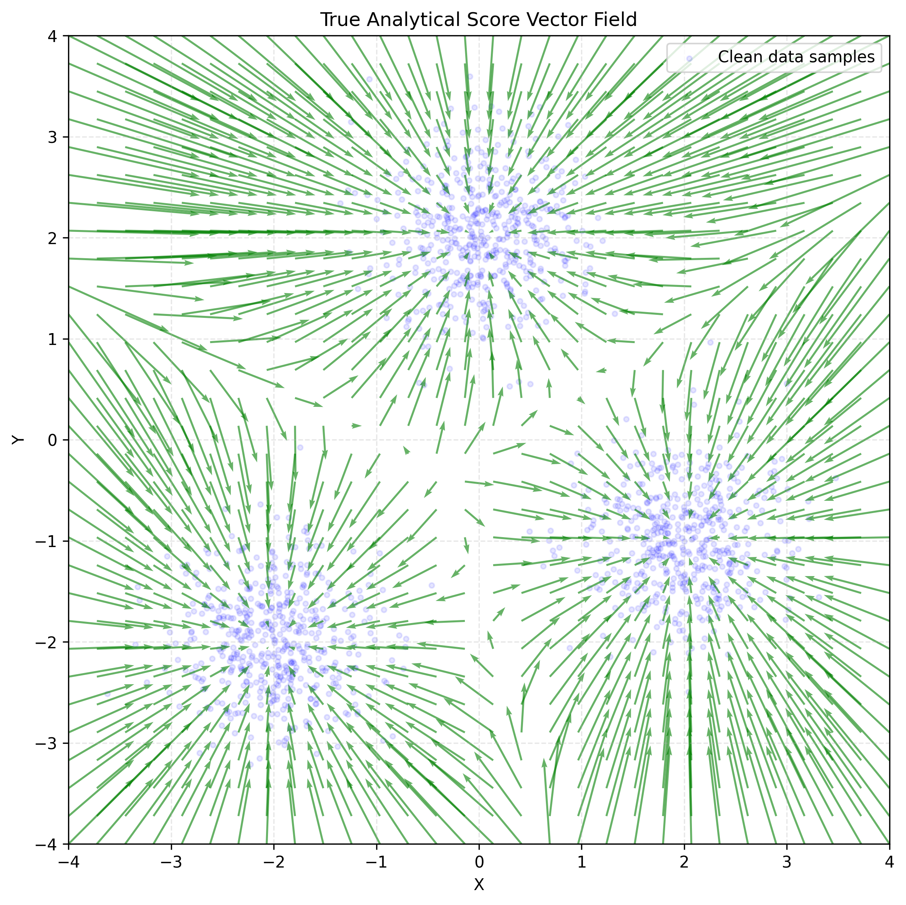
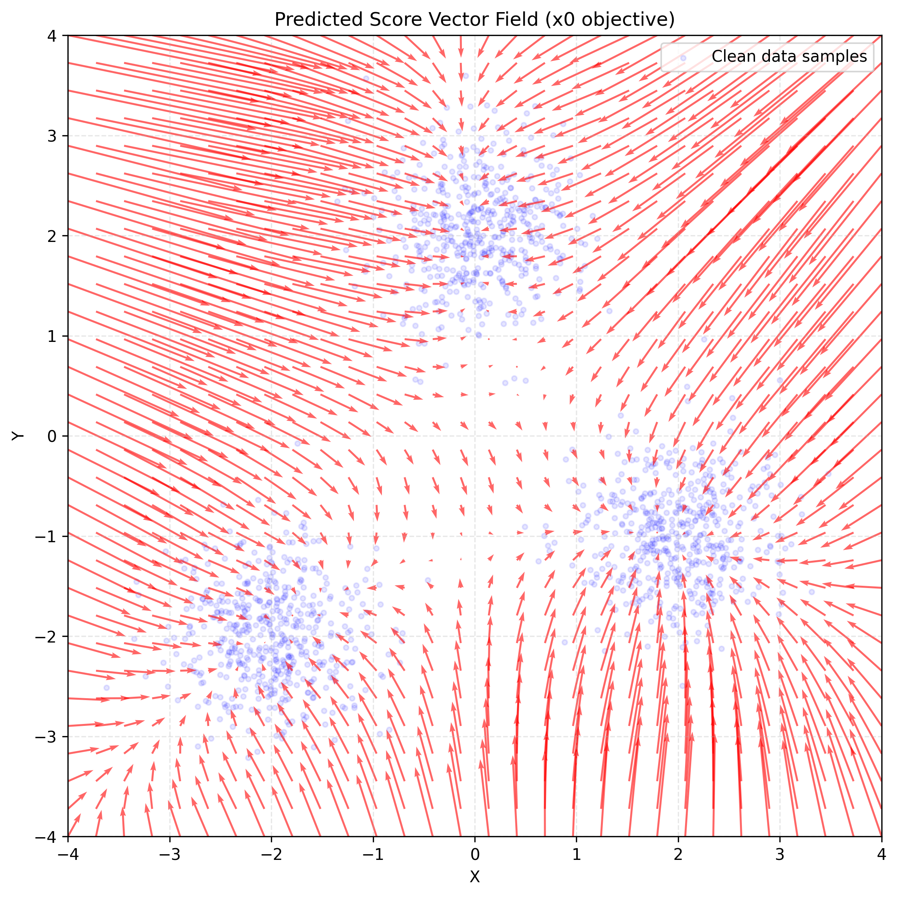
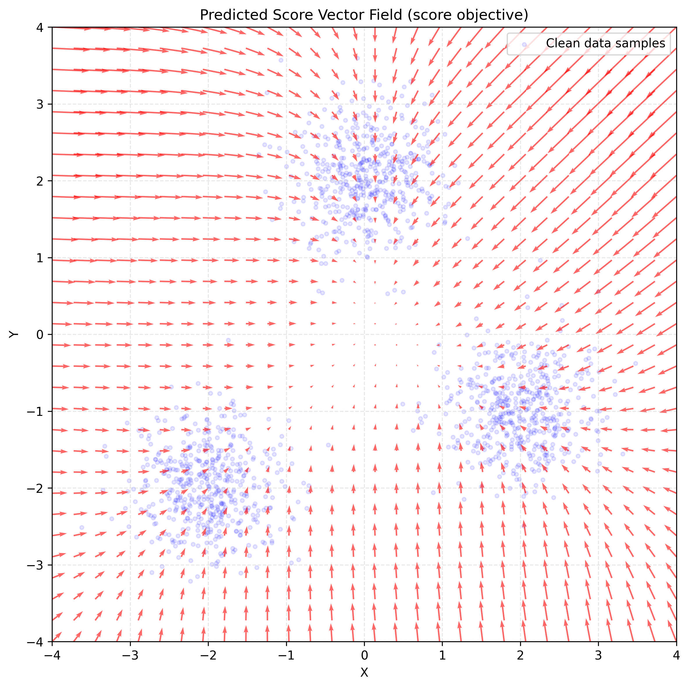

Research Log
Two Ways to Learn the Same Score Field
The entries in this research log have been mainly theoretical, around the math used in generative models, with a specific emphasis on score-based and diffusion models. Today, I wanted to present a small experiment centered around ideas discussed in previous entries. In particular, the goal is to train a first toy model to learn the score function with two different approaches.
Context
During previous entries, I've been trying to build the ideas in an order that makes it feel natural to move from conditional probability and the score function toward training a model that can eventually help generate data. In particular, last week's entry ended with questions about how to train a model when the posterior mean is intractable, including which approach is better: training a clean-sample predictor or training with a conditional-score target.
Based on that, today's experiment is about training a very simple neural network that would either be trained to predict the observed clean sample \(x_0\), whose MSE-optimal predictor from \(x_t\) is the posterior mean \(\mathbb{E}[x_0 \mid x_t]\), or be trained to predict a conditional-score target. Then, we compare the results against the analytical score, i.e., the ground-truth marginal score we can calculate exactly.
The code and full report are available in the toy score-matching checkpoint.
Setup
It was important for me to keep everything simple, so the key ideas of the experiment remain accessible and are not obscured by considerations required in real-world settings. In that spirit, the model and dataset are very basic, but enough for our purposes.
To make the experiment concrete, both runs used the same setup; only the training target changed:
- Model: A small PyTorch MLP that maps a two-dimensional noisy point to a two-dimensional output, with two hidden layers of 32 neurons and ReLU activations.
- Training: Full-batch SGD with a learning rate of \(0.1\), MSE loss, and 20 optimizer updates.
-
Dataset: 1,500 two-dimensional samples generated
with scikit-learn's
make_blobs, split into 1,200 training and 300 validation samples. - Scope: The model learns at one fixed Gaussian noise level, \(\sigma=0.5\). It does not receive \(t\) as an input, so this is not yet a full diffusion model.
Also, the dataset was generated synthetically so that we know its PDF and, therefore, can compute its exact score and compare it to the model's result.
Following the idea of three possible peaks from the previous entry, the dataset was generated as an equal-weight mixture of three Gaussian mountains. Each clean component has standard deviation \(\tau=0.5\) and is centered at:
We sampled points from these hills and implemented a basic fixed-noise corruption process:
Adding Gaussian noise to a Gaussian produces a new Gaussian, so we know the resulting noisy distribution. Each noisy component has total variance \(v_t^2=\tau^2+\sigma^2\), and we can calculate the exact score at any point \(x\):
Here, \(r_k(x)\) is the posterior responsibility of component \(k\): the probability that the observed point \(x\) came from Gaussian mountain \(k\).
Having the exact score is highly beneficial for testing whether our model was learning and how close its result was. For the \(x_0\) objective, we use the relation:
Note: The formula uses the posterior mean
\(\mathbb{E}[x_0 \mid x_t]\), but we do not need to calculate that
mean and provide it as a label. Instead, the model trains on many
noisy-clean pairs \((x_t, x_0)\). Under MSE, the best prediction for
a noisy point is the average of the clean values that could have
produced it. That average is exactly the posterior mean. This is
why the training code uses target = train_x0. We
developed this MSE argument in
Denoising Is Not Inversion.
We provided the training script with two objectives: an \(x_0\) objective and a conditional-score objective:
if TRAIN_CONFIG["objective"] == "x0":
target = train_x0
elif TRAIN_CONFIG["objective"] == "score":
# Conditional Gaussian score target: -(xt - x0) / sigma^2.
target = -(train_xt - train_x0) / FORWARD_SIGMA**2Note: The conditional-score objective does not use the analytical marginal score as its label. For each noisy-clean pair, it uses \((x_0-x_t)/\sigma^2\). Under MSE, the model learns the average of these targets for a given \(x_t\), and that average is the marginal score.
Then, we evaluated the model based on the objective it was trained on:
if objective == "x0":
# Tweedie's identity converts E[x0 | xt] to the marginal score.
scores = (predictions - noisy_points) / forward_sigma**2
elif objective == "score":
scores = predictionsResults
In this experiment, using the same architecture, learning rate, and budget of 20 optimizer updates, the \(x_0\) objective achieved a lower validation score MSE than the conditional-score objective.
| Objective | Final validation objective loss | Validation score MSE |
|---|---|---|
| \(x_0\) | 0.181885 | 0.727958 |
| Conditional score | 3.472780 | 1.407152 |
The two objective-loss values live in different target spaces, so they should not be compared directly across rows. The validation score MSE is the shared metric for both models.
At the ideal population optimum—the function that minimizes expected loss over the full data distribution—both objectives recover the same marginal score field. This single run only shows that, under this architecture, target scaling, and training budget, the \(x_0\) route was easier to optimize.
Here, the validation score MSE is the mean squared error between the score inferred by the model and the exact score, using data not seen during training.



These results show just one specific experiment where the model was trained for 20 optimizer updates, and the conditional-score objective showed signs of underfitting, as explained in the report.
Takeaways
A first experiment was long overdue after all the math-heavy entries! I hope this post feels like a refreshing change of pace for readers who have been following the series.
In fact, I think the main takeaway is not what the model learned, how the two objectives compared, or how we should generate data. My hope is that this tiny experiment feels like you are connecting the dots in a natural way: “I know about the score function. I know that models can learn from data. What if I try my hand at learning the score from data?”
That is, at least for me, very encouraging: you can run an experiment that uses advanced techniques while understanding what is happening at every step. The experiment is small, but scaling from here feels much more approachable.
Other than that, it was not completely obvious that, under this setup, the indirect \(x_0\) objective would produce the lower validation score MSE after the same short training budget. But that is an issue for another post.
Open Questions
- Would training the model longer produce a different result in which the conditional-score objective is superior?
- How could we use the learned score field to sample new points from the three-mountain distribution?